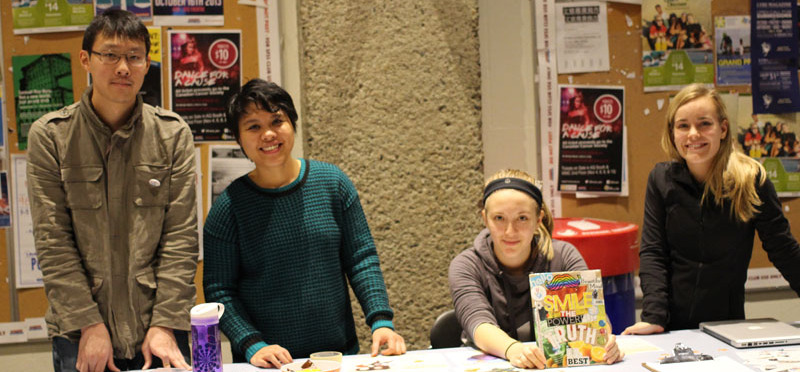

Pledge

Hi F.I.V.E. movement to eliminate stigma
Hi F.I.V.E. movement to eliminate stigma
The Hi F.I.V.E. campaign aims to eliminate stigma towards those who are experiencing mental health distress or illness (now or in the past). We invite everybody in our campus communities to join us in taking this pledge and respect and embrace anyone experiencing mental health distress or mental illness.
Hi F.I.V.E. SPACES provide safe places for those who struggle and or experience mental health distress to seek support and friendship.
PLEDGE: I am committed to the following regarding those who experience or have experienced mental illness or mental health distress including myself:
- I am committed to embracing and respecting those experiencing mental health distress and mental illness.
- I am committed to standing up (and speaking up) when disrespect is shown against those experiencing mental health distress and mental illness.
- I am committed to making a difference and promoting wellness in the lives of those experiencing mental health distress and mental illness.
- I am committed to conducting myself and my endeavours in a manner that is respectful of those who experience mental health distress and mental illness.
- I pledge to know the facts, to being aware of my attitudes and behaviours, and to speaking and acting respectfully when discussing or speaking to those with mental health distress and mental illness.
- I am committed to suspending judgments against people who experience mental health distress and mental illness.
- I am committed welcoming friendships and/or relationships with those experiencing mental health distress and mental illness.
- I am committed to not treating people who experience mental health distress and mental illness as if all they are is their diagnosis.
Pledges Taken: